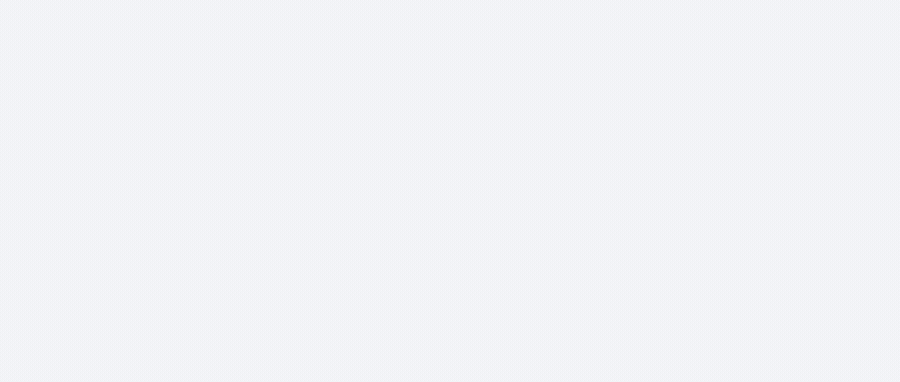
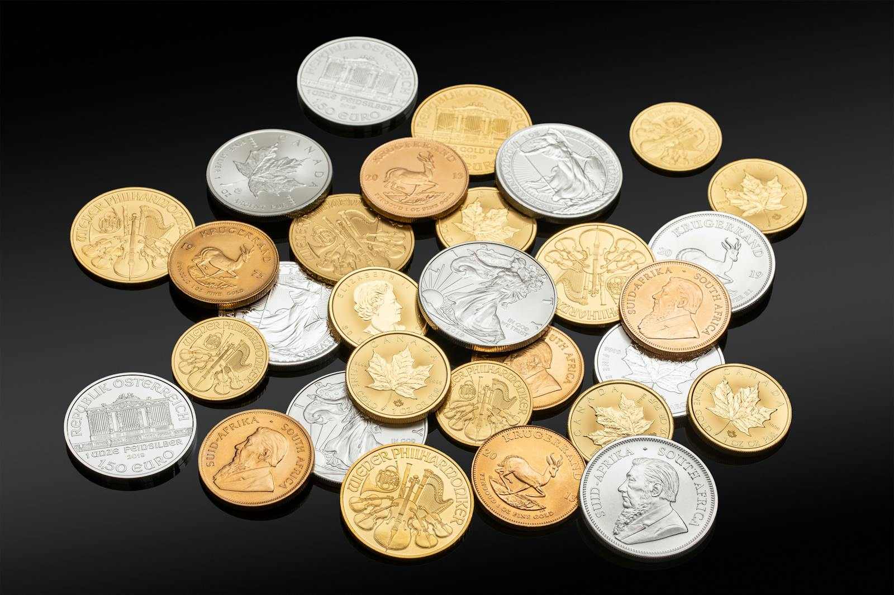
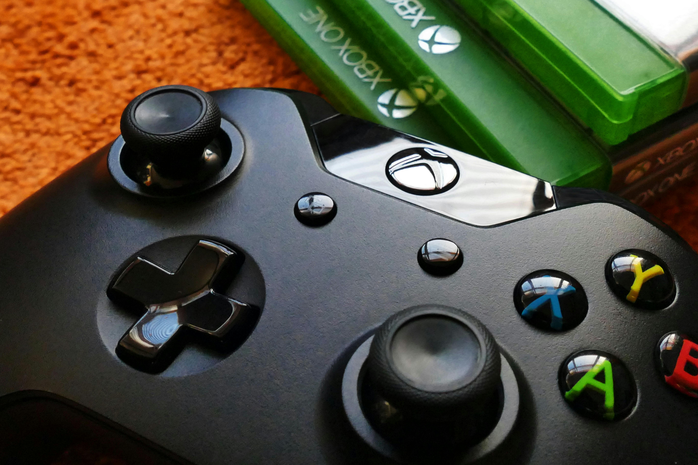
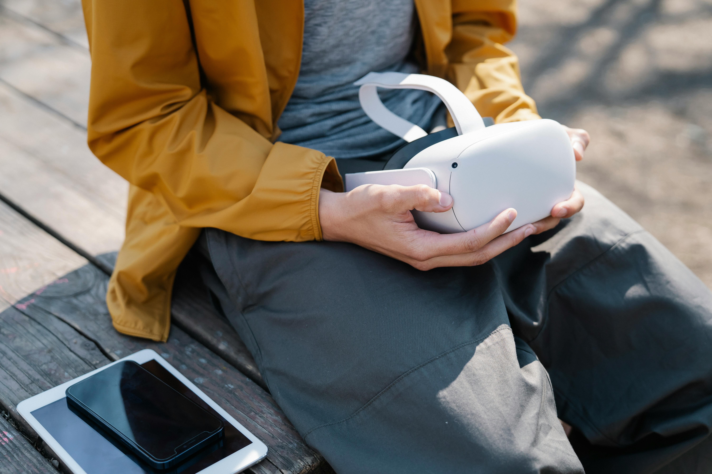
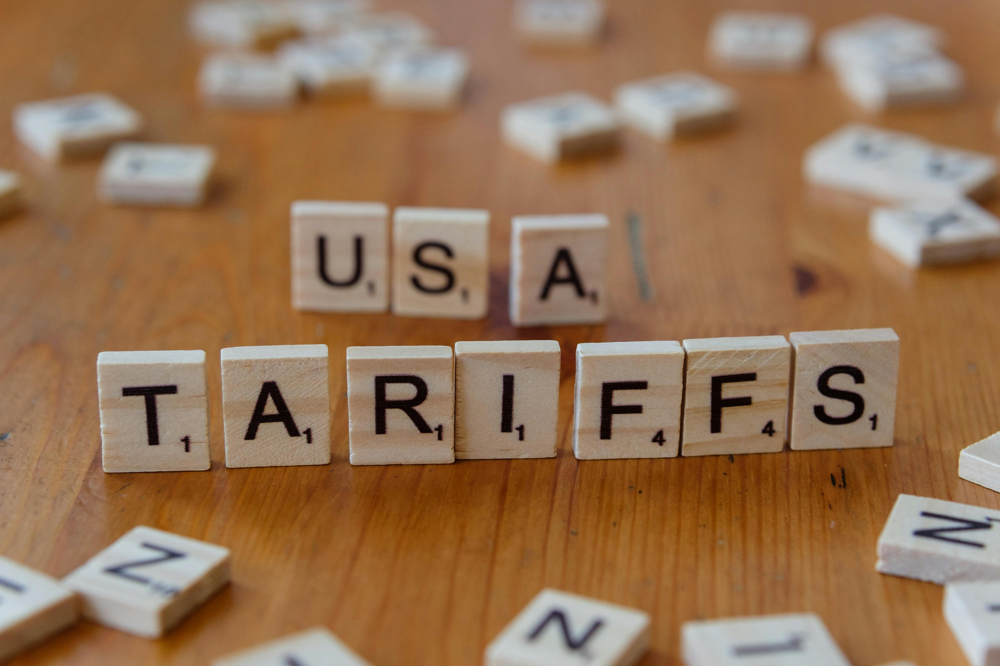
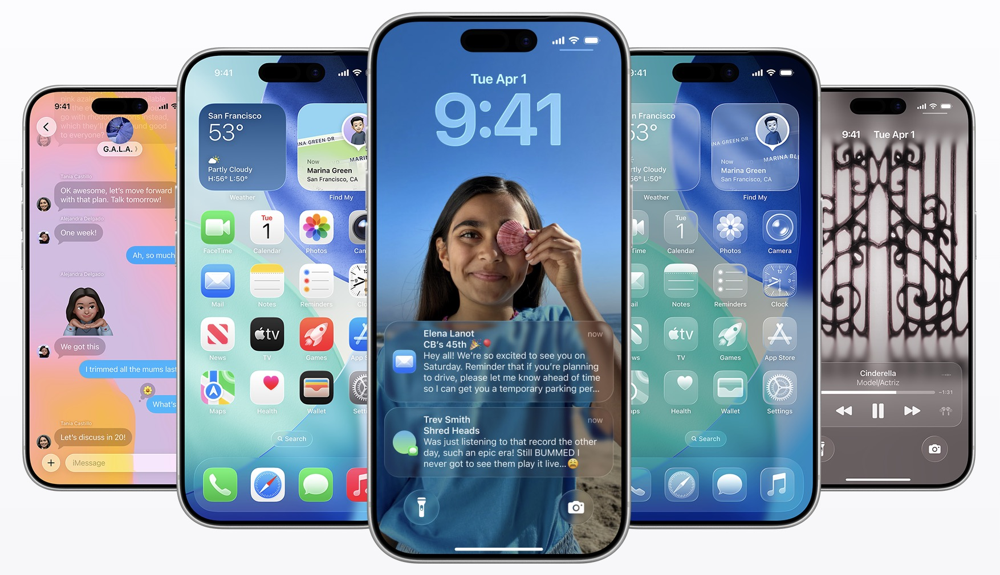

AI DAILY
AI 行业日报
2026年2月21日 · 精选 8 条
01技术突破
谷歌 Gemini 3.1 Pro 发布，抽象推理能力翻倍至 77.1%，价格不变

谷歌发布 Gemini 3.1 Pro Preview，在 ARC-AGI-2 基准测试（考察解决全新逻辑模式的能力）中得分 77.1%，是上代 Gemini 3 Pro 的 2 倍以上。在科学知识测试 GPQA Diamond 中得分 94.3%，在真实网络搜索任务 BrowseComp 中得分 85.9%，均超过 Anthropic Sonnet 4.6 和 OpenAI GPT-5.2。
定价与上代相同，每百万 token 输入 2 美元/输出 4 美元，运行同等评测套件的成本不到 Anthropic Opus 的一半。Gemini 3.1 直接构建在上周发布的 Gemini 3 Deep Think 推理模式技术基础上，Google DeepMind VP 姚顺宇喊话「不可阻挡之势到来」。
INSIGHT
ARC-AGI 考察的是「遇到从没见过的规则时能不能自己推导出来」——这是人类智能里最难复制的部分。77.1% 不只是跑分，是在说 Gemini 在抽象推理这件事上正在逼近可用水平。价格和上代一样但能力翻倍，对用 Claude 或 GPT 做复杂分析的开发者来说是个直接的换模型信号。
02市场数据
黄金破 5100 美元历史新高，白银单日涨 8.6%

2 月 21 日，现货黄金涨 2.15% 至 5104.90 美元/盎司，COMEX 黄金期货涨 2.51% 至 5122.80 美元，双双创历史新高；现货白银涨 7.81%，COMEX 白银期货涨 8.61% 至 84.97 美元/盎司，本周累涨超 8%。
触发原因与特朗普关税政策不确定性、美联储利率预期和地缘风险叠加相关。黄金本周累涨 1.27%，突破 5000 美元关键整数关口后连续新高。白银的涨幅是黄金的 4 倍，通常被视为工业金属+贵金属双重属性共振的信号。
INSIGHT
白银单日涨 8.61%，远超黄金的 2.15%。市场同时有人把白银当避险资产买，也有人押注工业需求（太阳能板、电子元件）——两个逻辑叠加时，波动放大是正常结果。黄金破 5100 的更直接含义是：全球资金正在降低对美元资产的偏好，关税不确定性是这一轮的核心驱动。
03人事变动
微软 Phil Spencer 退休，AI 部门高管接掌 Xbox

微软游戏业务负责人 Phil Spencer 宣布退休，结束 38 年微软生涯（含 12 年 Xbox 掌门），Xbox 总裁 Sarah Bond 同步离职。接棒者 Asha Sharma 此前任职微软 CoreAI 部门负责人，是微软内部的 AI 业务高管，在微软仅有两年任期，之前在 Meta 和 Instacart 任职。
Xbox Studios 负责人 Matt Booty 晋升为执行副总裁兼首席内容官，将与 Sharma 配合工作。Sharma 表示将「回归 Xbox 核心玩家」，从主机出发向 PC、移动和云端扩展。Spencer 将以顾问身份过渡至今年夏季。
INSIGHT
微软把游戏业务交给一个 AI 高管，不是临时调配。CoreAI 部门管的正是微软 AI 产品线整合——这个信号说明，Xbox 下一阶段的战场可能不是主机性能，而是 AI 功能在游戏里的集成方式。Sarah Bond 同步离职，彻底排除了「内部顺位接班」的可能。
04行业动态
Meta 元宇宙放弃 VR，烧了 800 亿美元后转向纯移动端

Meta 宣布将旗下虚拟世界平台 Horizon Worlds 的重心从 VR 全面切向纯移动端，明确将 Quest VR 硬件平台与 Horizon Worlds 业务「显式分离」。这是 2021 年扎克伯格宣布「全面押注元宇宙」以来最彻底的战略转向。
Meta Reality Labs 部门自 2020 年以来累计亏损近 800 亿美元。今年 1 月裁员约 1500 人（占 10%），关闭多个 VR 游戏工作室；VR 健身应用 Supernatural 进入「维护模式」，不再更新内容。Horizon Worlds 移动版将正面竞争 Roblox 和 Fortnite。
INSIGHT
800 亿美元买到的教训是：用户不想戴头显，但愿意打开手机上的社交游戏。Horizon Worlds 转向移动端，本质是承认「元宇宙」这个概念不成立，但「沉浸式社交」的需求确实存在——只是实现方式不是 VR，是手机。Meta 的赌注现在全压在 AI 眼镜上。
05产品发布
Anthropic 发布 AI 安全能力，网络安全 ETF 单日跌 4.9%
Anthropic 发布大模型安全能力组合，包括自动检测模型的危险行为、监控可疑的 Agent 任务链等功能，面向企业级用户开放。发布当天，Global X 网络安全 ETF 收跌 4.9%，创 2023 年以来最低收盘价。
市场逻辑是：AI 系统能够自主检测和拦截安全威胁，意味着企业对外部专业网络安全软件的依赖降低。这和 Anthropic 的 Claude 直接集成到企业工作流的方向一致——原来需要单独采购安全工具的场景，AI 本身就能覆盖。
INSIGHT
传统网络安全公司的核心产品是「规则库+威胁情报」，现在 AI 直接做这件事，而且会随使用场景自适应更新。单日 4.9% 的 ETF 跌幅不是情绪，是机构在重新定价这个赛道的护城河高度。这类威胁在 AI 每一个垂直赛道都会出现一次。
06政策监管
最高法院裁定当天，特朗普签署 10% 全球进口关税行政令

美国总统特朗普在最高法院裁定《国际紧急经济权力法》不授权征收大规模关税当天，签署行政令宣布对所有国家加征 10% 全球进口关税，称依据「其他法律途径」，相关关税「立即生效」。同一天，白宫确认部分 IEEPA 关税失效。
特朗普同步宣布启动多项基于《1974 年贸易法》第 301 条的「不公平贸易」调查，并表示所有以「国家安全」为由、依据《1962 年贸易扩展法》第 232 条征收的关税仍然有效。美股三大指数当日小幅收涨，黄金涨 2%。
INSIGHT
最高法院关门，特朗普从另一扇窗进来。301 条款和 232 条款是老工具，历史上曾用于对中国商品加征关税。10% 全球关税能否真正落地还有法律争议，但这个动作本身正在把「关税不确定性」变成企业决策的长期背景噪音。
07产品发布
Apple iOS 26.4 Beta：AI 生成歌单、视频播客、跨平台加密短信

苹果发布 iOS 26.4 公测版，三项主要更新：Apple Music 新增 AI「Playlist Playground」功能，用文字描述生成 25 首定制歌单；Podcasts 应用支持视频播客（HLS 格式），与 Spotify 的视频播客策略正面对标；iMessage 与 Android 之间的 RCS 消息增加端到端加密测试。
AI 播放列表调用 Apple Intelligence，支持封面艺术自动匹配；视频播客支持 Wi-Fi/蜂窝自适应画质和离线下载。Apple 同时宣布向参与动态广告投放的广告网络收取按次计费的印象费，预计年底生效。
INSIGHT
Apple 的 AI 功能一贯不做首发，但做落地。Playlist Playground 对标的是 Spotify 的 AI DJ，用文字生成歌单是个使用频率很高的场景。RCS 加密测试意味着 iPhone 和 Android 之间的消息安全差距在缩小——但苹果的节奏是「先测，后推」，公众版可能要等到今年晚些时候。
08行业动态
中国 AI 春节红包战：豆包周活 1.55 亿，五强格局成形
2026 年春节 AI 红包战：豆包（抖音）周活突破 1.55 亿，千问（阿里）「30 亿免单」活动当天日活飙升至 7352 万，逼近豆包的 7871 万；腾讯元宝以 10 亿现金红包开场，活动当天登顶 App Store；蚂蚁阿福以「健康福」切入医疗垂直场景；DeepSeek 未发红包，但被多家对手直接调用其 API 补充能力。
各家策略分化明显：豆包押 AI+硬件入口、千问押阿里生态闭环、元宝押微信熟人关系链、阿福押医疗垂直场景、DeepSeek 押底层技术供应商位置。分析认为，中国 AI 应用已从「百模大战」正式进入由五家头部平台主导的「春秋五霸」时代。
INSIGHT
国内 AI 应用的竞争已经从「谁的大模型更强」变成「谁的场景生态更密」。DeepSeek 连红包都没发，却在对手的产品里无处不在——这说明技术能力本身可以成为基础设施，不需要直接面向消费者。但对还没有强生态绑定的新入局者来说，这个格局正在快速关门。
今天哪条最值得聊？评论区见。
觉得有价值，可以转给关注 AI 动态的朋友。
由 Zayen知蓝 整理 · 构建者视角